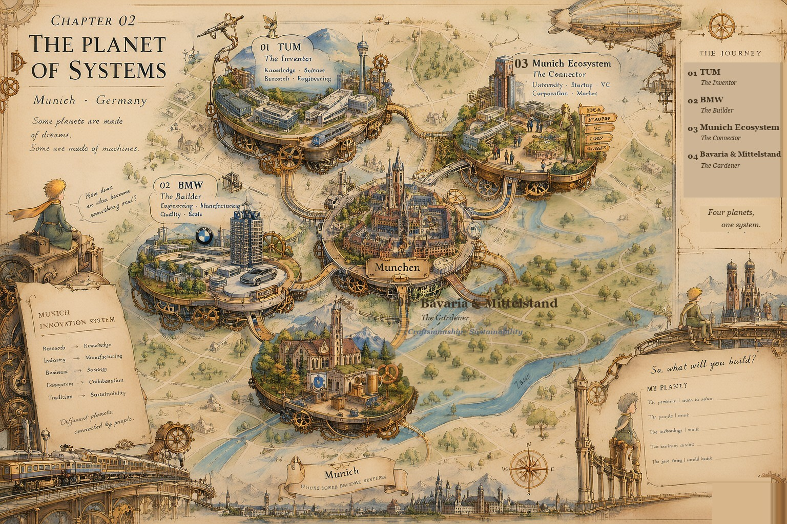
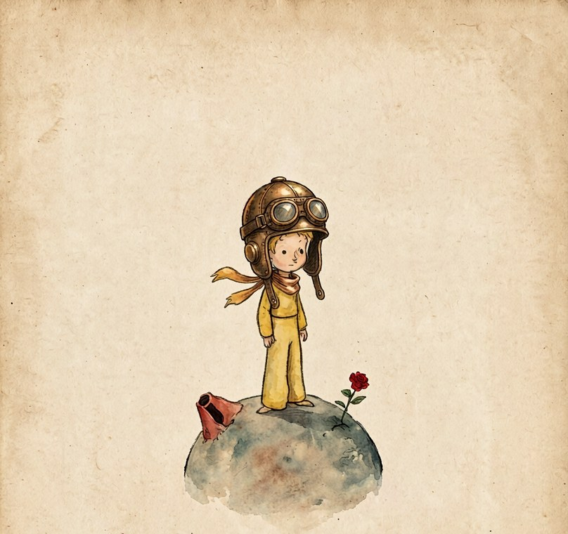

Chapter 02
THE PLANET OF SYSTEMS
Le Petit Prince · Voyage à Munich
小王子 · Munich 机械之旅
有些星球由梦构成，有些星球由机器构成。
小王子降落在慕尼黑的上空，在四颗机械星球之间，寻找一个系统运转的秘密。
MUNICH · GERMANY
What makes us build?


01
TUM · 发明家的星球
03
Munich Ecosystem · 连接者的星球
02
BMW · 建造者的星球
04
Bavaria & Mittelstand · 园丁的星球
🔍 点击地图任意位置，放大看机械细节 · 点击金色节点，小王子会走去那颗星球

小王子换上了黄铜飞行帽与护目镜，玫瑰被好好别在他的小行星上